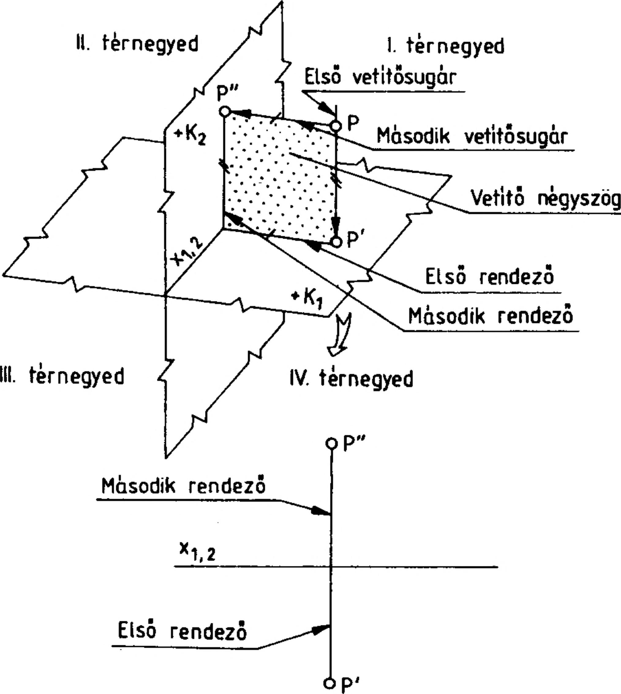

3. Vetületi ábrázolás 3.2.1. Térelemek ábrázolása A műszaki ábrázolás céljaira a merőleges párhuzamos vetítés felel meg a legjobban. Egy térbeli alakzat egyértelmű meghatározásához rendszerint nem elegendő egy merőleges vetület, mivel ez csak a test két kiterjedésének megmutatására alkalmas. A tárgyakról ezért általában két különböző vetületet készítünk, két egymásra merőleges képsíkon. A két képsíkos ábrázolást megalkotójáról (G. Monge, 17641818) Monge-féle ábrázolásnak is nevezik. A vízszintes helyzetű képsíkot első képsíknak nevezzük, a felülnézet képsíkjának jele: Kh a függőleges állásút második képsíknak, az elölnézet képsíkjának nevezzük, jele: K2. Az első és második képsík metszésvonala a képtengely, amelyet x^-vel jelölünk. Az x betű a latin axis (magyar jelentése tengely) szóból származik, az 1,2 index arra utal, hogy az első és a második képsík metszésvonala. A térben egymásra merőleges síkokon képzett P’, P" vetületek közül a P" a helyén marad, a P’ első vetületet a P" síkjába fordítva ábrázoljuk. így egy pont összetartozó két vetülete egy függőleges egyenesen látható (67. ábra), mégpedig, ha a pont az első térnegyedbQn van, a pont felülnézeti képe az elölnézeti kép alatt helyezkedik el. 67. ábra 3.2.2. Három képsíkos ábrázolás Egyes térgeometriai formák vagy ipari alakzatok egyértelmű meghatározása, részleteinek alaposabb megmutatása érdekében, az általánosan használt elölnézeten (K2) és felülnézeten (Ki) kívül gyakran megszerkesztjük az alakzat harmadik képét , az oldalnézetét is. A műszaki gyakorlatban a testeket olyan helyzetben ábrázoljuk, hogy síkfelülete a képsíkkal párhuzamos vagy rá merőleges legyen. A profilsíkban levő elemek helye a két vetület alapján betűzés nélkül - nehezen ismerhető fel, ezt az oldalnézeten lehet szemléletesen bemutatni. Az oldalnézet merőleges az elölnézet és a felülnézet képsíkjára, képsíkjainak jele K3. Kapcsolhatjuk az eddig megismert két képsík jobb vagy bal oldalára, ennek megfelelően bal- (68. ábra), ill. jobb-nézetnek (69. ábra) nevezzük. A három képsík derékszögű képsíkrendszert alkot, amelyben az eddigi két képsíkos rendszert balnézet vagy jobbnézet egészít ki. A három képsíkos rendszert is egy közös síkba, az elölnézet síkjába fordítva rajzoljuk meg. A harmadik kép készítésének elve ugyanaz, mint az elölnézet vagy a felülnézet képsíkjáé volt. A harmadik képsíkra is merőlegesen vetítünk, így a vetítősugarak párhuzamosak az x1>2 tengellyel. Kövessük végig az eddig megismert térelemek három képsíkos ábrázolási módját. 68. ábra 69. ábra - ^ *3 - ^ *2, 3 K2 J Jobbnézet > képsíkja Elölnézet < képstkja f X1, 2 Felülnézet képslkja A - V-*. A képslkrendszer az előlnézet síkjába forgatva 18
